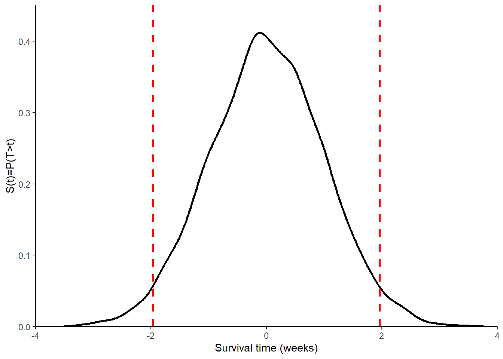
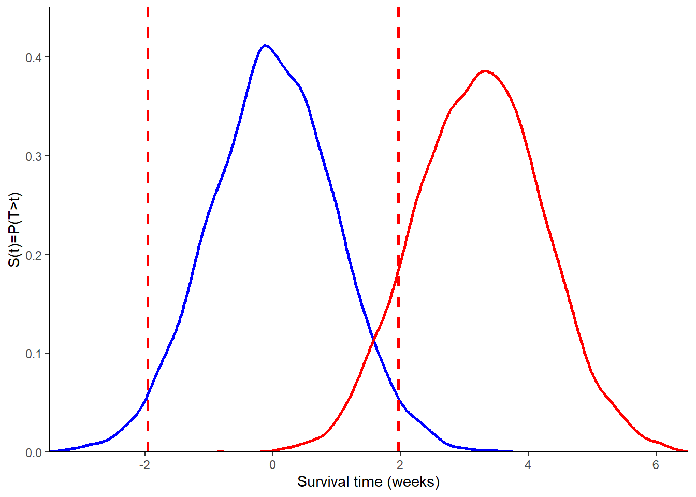

![]()

Sample Size Calculations - I
Quarto
R
Academia
Medical Statistics
Sample Size Calculation
Hello folks and welcome back to my regular update on my blog. I am back after a short Easter break and ready to face all teaching and research tasks in the upcoming weeks. Today I feel also a bit energetic and would therefore like to continue my on-going topic of introducing readers to some basic elements of medical statistics. In particular, I would like to discuss the topic of sample size calculation, which has represented an important component in the building and setting-up of a new study although, in my experience, people tend to oversimplify this task, especially non-statisticians. So, what is this about and why it is of such a theoretical and practical importance when designing a study to answer a given research question? let me try to provide some general concepts around it together with a broad overview of different classical approaches to sample size calculations.
Introduction
When designing a research study, it is essential to define how many patients are needed to answer the given research question. If the sample size is too small, there will be a loss of power and/or it will become impossible to distinguish real clinical improvements from chance variation; if the sample size is too large, some resources will be wasted, including the time invested by both patients and investigators. For these reasons, sample size calculations are required in many grant applications, research protocols and ethics applications.
There are different approaches to sample size calculations, whose choice mainly depends on the objective of the study, design of the study and the preference of the investigators. Two classical groups of approaches are: Hypothesis test-based calculations; and Precision-based calculations.
Hyopthesis test-based calculations
Hypothesis test-based approaches are grounded on calculating the sample size needed to perform a statistical test with sufficient power. A typical example is the comparison of a new treatment versus standard of care in terms of means (e.g. via t-test), proportions (e.g. via \(\chi^2\) test) or survivor functions (e.g. via log-rank test).
To illustrate the general idea behind the approach, let us consider an hypothetical trial where the investigators wish to assess whether a new drug is effective in reducing blood pressure in a given patient population. Patients will be randomised to either the new drug (1) or placebo (2), where blood pressure will be measured after the course of the treatment and compared across groups using a t-test at \(\alpha=0.05\) level of significance. This research question can be represented in terms of classical hypotheses as: \(H_0:\mu_1=\mu_2\) vs \(H_1:\mu_1 \neq \mu_2\). So, how many patients do we need to answer this research question?
Let us start from the information given.
First, we know that the level of significance or type I error rate, that is the probability of rejecting \(H_0\) if it is true, is set to the conventional \(\alpha=0.05\).
Second, we also need to define the type II error rate, that is the probability of not rejecting \(H_0\) when it is false, which is usually denoted with \(\beta\) and whose complement represents the so-called power of the test (\(1-\beta\)), representing the probability of correctly rejecting \(H_0\) when it is false. In many cases, trials are designed assuming by convention either \(0.8\) or \(0.9\) power.
Third, we need to define the distribution of the test statistic under both \(H_0\) and \(H_1\), often by approximating the t-test statistic with that of a z-test: \(Z=\frac{(\bar{X}_2-\bar{X}_1)}{\sigma\sqrt{2/n}}\), where \(\bar{X}_1\) and \(\bar{X}_2\) are the sample means of the two groups, \(\sigma\) is the standard deviation across both groups and \(n\) is the number of patients in each group. Assuming normality of the outcome variable, we know the z statistic to be distributed as:
\[ Z \sim N(\frac{\mu_2-\mu_1}{\sigma \sqrt{2/n}}, 1), \]
and statistical significance is achieved at \(\alpha=0.05\) if \(\mid Z \mid > 1.96\). Based on the information given before, we require that the trial has \(0.9\) power and \(0.05\) type I error rate:
\[ P(\mid Z \mid > 1.96 \mid H_0)=0.05 \;\;\; \text{and} \;\;\; P(\mid Z \mid > 1.96 \mid H_1) \geq 0.9 \] To derive the distribution of the z-test statistic under \(H_0\), we can simply observe that \(\mu_2-\mu_1=0\), which means \(Z \sim N(0,1)\), and thus \(P(\mid Z \mid > 1.96 \mid H_0)=0.05\). The entire distribution of Z under \(H_0\) can be graphically obtained as shown in Figure 1.
To derive the distribution of Z under \(H_1\), we need to specify the anticipated difference in means and the standard deviation. For example, assume the new drug will on average reduce blood pressure by \(5\) mmHg (\(\mu_2-\mu_1=5\)) and the standard deviation of the outcome across both groups is known to be \(10\) mmHg (\(\sigma=10\)). Then, we obtain
\[ Z \sim N \bigg(\frac{\sqrt{n}}{2\sqrt{2}},1\bigg), \]
which shows how the distribution of Z under \(H_1\) depends on the sample size \(n\). A graphical comparison of the assumed distribution of Z under \(H_0\) and \(H_1\) is given in Figure 2.

If we require a power of \(0.9\), then we can use the above information to derive the value of \(n\) needed in order to obtain a power of at least \(0.9\), given values for \(\alpha\), \((\mu_2-\mu_1)\) and \(\sigma\). In general, we require that \(P(Z \mid H_1 > z_{1-\alpha/2})=1-\beta\) and solving for \(n\) we obtain
\[ n = \frac{2\sigma^2(z_{1-\alpha/2}+z_{1-\beta})^2}{(\mu_2-\mu_1)^2}, \]
where in out case: \(z_{0.975}=1.96\); \(z_{0.9}=1.28\); \(\sigma=10\), \(\mu_2-\mu_1=5\). Note: it is also possible to derive the power \((1-\beta)\) if we fixed \(n\) first from the above formula. Often, the sample size equation is shortened to
\[ n = \frac{2(z_{1-\alpha/2}+z_{1-\beta})^2}{\Delta^2}, \] where \(\Delta=\frac{\mu_2-\mu_1}{\sigma}\) is known as the standardised effect size.
To illustrate how sample size calculations can be performed under different types of outcomes, let us now consider a trial investigating whether a given thrombolytic intervention reduces the risk of death following a heart attack. The aim is to establish whether this intervention has a lower one-year mortality risk (\(\pi_1\)) compared to placebo (\(\pi_2\)). Usually, we compare mortality using a z-test by setting: \(H_0:\pi_1=\pi_2\) vs \(H_1:\pi_1 \neq \pi_2\). So, how many patients are needed?
It is possible to follow the same approach, as shown for the continuous outcome, to derive a sample size equation for a binary outcome:
\[ n = \frac{(z_{1-\alpha/2}\sqrt{2\bar{\pi}(1-\bar{\pi})}+z_{1-\beta}\sqrt{\pi_1(1-\pi_1)+\pi_2(1-\pi_2)})^2}{(\pi_2-\pi_2)^2}, \]
where \(\pi_1\) and \(\pi_2\) are the expected proportions of deaths in the two groups, \(\bar{\pi}=\frac{\pi_1+\pi_2}{2}\) is the overall proportion of deaths. The equation is often approximated as:
\[ n = \frac{2(z_{1-\alpha/2}+z_{1-\beta})^2}{\Delta^2}, \] where \(\Delta=\frac{(\pi_2-\pi_1)}{\sqrt{(\bar{\pi}(1-\bar{\pi}))}}\) is the standardised effect size.
Let us consider the following hypothetical data: \(\pi_2=0.2\), \(\pi_1=0.15\), \(\alpha=0.05\) and \(\beta=0.2\). Then, we have \(\pi_2-\pi_1=0.05\), \(\bar{\pi}=0.175\), \(z_{0.975}=1.96\) and \(z_{0.8}=0.84\). Next, we can fill all these values into the sample size equation to obtain \(n=906\) in each group.
Sample size adjustments
In practice, we need to inflate the sample size as calculated from the above equations due to possible drop-out from the study or lack of compliance of some patients with the study medication. In addition, sample size also needs to be inflated when planning a study with unequal randomisation.
To illustrate typical examples of these adjustments, let us now consider a trial comparing a new intervention and placebo for the treatment of spasticity due to multiple sclerosis, where the outcome is given by a muscle tone score (continuous) assuming an expected difference of \(2.5\) units, a standard deviation of \(6.5\) units, and a significance level and power of \(0.05\) and \(0.8\), respectively. Using the formula for the Z test, we end up with \(n=107\) needed in each group.
We now consider the possibility of some of the patients in the study to drop out, who would cause a loss in power. To offset this loss, then sample size should be inflated accordingly. Assuming the anticipated drop-out proportion is \(d\), then the original sample size should be multiplied by an inflation factor of \(IF_d=1/(1-d)\) to adjust for this expected drop-out proportion. For example, if \(d=0.1\), then \(IF_d=1.11\) and the required total sample size after adjustment becomes \(N=2\times 107 \times 1.11=238\).
If we consider the situation where some patients do not comply with the research protocol (i.e. patients not taking the assigned treatment), then we end up with a dilution of the effect size. To compensate this effect, we then need to multiply the original sample size by a different inflation factor of \(IF_{nc}=1/(1-NC_1-NC_2)^2\), where \(NC_1\) and \(NC_2\) denote the proportions of patients in the two groups who are non-compliant. For example, assume the expected proportion of non-compliant patients is \(0.3\) in group 1 and \(0\) in group 2; then we have \(IF_{nc}=2.04\) and the updated total sample size can be obtained as \(N=2\times n \times IF_{nc}\).
In case studies do not have an equal number of patients in each arm, the allocation of the number of patients to each group in the study is defined based on a so-called allocation ratio \(r\), i.e. \(1:r\) allocation. Then, the sample size in group 1 can be obtained as
\[ n_1=\frac{(r+1)n}{2r}, \] and then derive \(n_2=r \times n_1\). For example, let us assume we want to use a \(1:2\) (drug:placebo) allocation, which means \(r=2\). Then, we can obtain the number of patients in group 1 as \(n_1=3 \times n / 4\), and those in group 2 as \(n_2=n_1 \times 2\).
I think for today this is it. I would like to continue the topic in my next update if possible as there still some topics I would like to touch, such as sample size calculation for survival outcomes and precision-based methods. However, time is up for me today. Maybe, see you in my next post if you liked this one!